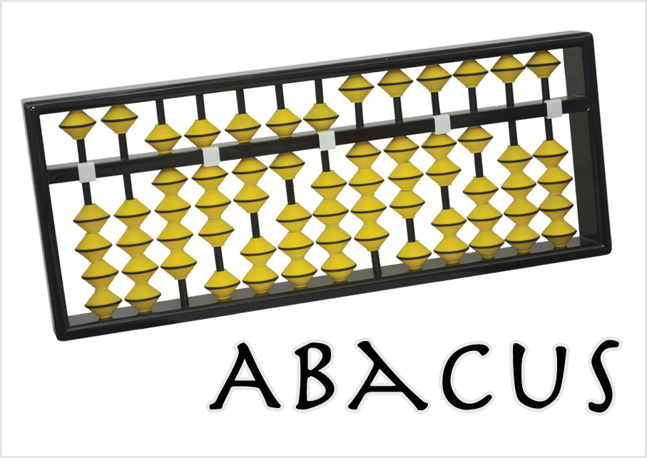
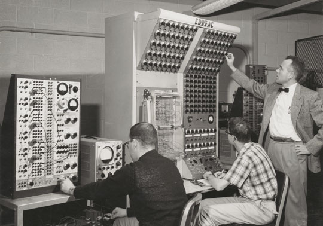

Abacus
The first Computer that have been ever created is the abacus. The abacus is not like the computer that we have. The abacus was an early calculator that the Mesopotamian use. It was also used by the Romans, Greek, Persian, etc. They used it to calculator prices, the amount of something, etc. The abacus had beads, which are the numbers, Then, columns, Which have four beads each,and has a place value you assign.
Mechanical Calulator
Later, in 1600s, they invented another calculator, but was more useful. It was called the mechanical calculator. This calculator can calculate 10x more effective than the abacus. The way the calculator works is that it has gears and lever. When you type the problem the gears will show the result.

Charles Babbage
Centuries later, computers have changed the way they look and work. In the 1800s, a man named Charles Babbage was the first person to be able to program a computer. Even though, his invention wasn’t completed because of funding problems. The government gave him money to work on his project, but the government lost confidence in him. His computer worked the same way as modern computer; they had the same hardware (data, a program memory, instruction based, etc.)

Analog Computer
Years later they made analog computer. This computer is much bigger. It’s able to change aspects of physical phenomena such as electrical, mechanical, or hydraulic.
Microsoft
In the 20th century, computers went from being mechanical to electronic. One such innovator was Bill Gates, who left Harvard and went on to create his first company“Microsoft” with his friend Paul Allen. They created their first GUI and launched Microsoft Office in 1985. In 1995, they fail to attract people to their product when the internet became a big thing. Eventually, they released Windows 95 & 98 which became a big hits. In 2006, Microsoft was interested in game console and made their first called Xbox that competed with PlayStation. Microsoft over the years botched a lot of their new version, like their botch with windows vista in which they had to release windows 7 to fix the botch.

Apple
A contemporary of Gates was Steve Jobs.He and his business partner, Steve Wozniak, made their made their first computer called Apple computer. Their computer made them into an incorporation. Which let them into new computer called Apple 2. In 1996, Steve Jobs leaves Apple to create NeXT software (the software was used to create Pixel and made “Toy Story”). Eventually, Apple purchased NeXT and Steve return to apple as an adviser. In 1997 They partner up with Microsoft, this let apple put Microsoft office and internet explorer into their computer. A year later, the Apple store and the iMac was introduced to the market, which became a big hit.

Conclusion
Over the years technology has changed from counting beads to programming computer to do amazing things. The invention of computer from two companies “Apple and Microsoft” has change the world to the one we know today. Even though computers can do amazing things, computing has not reached it’s full potential.